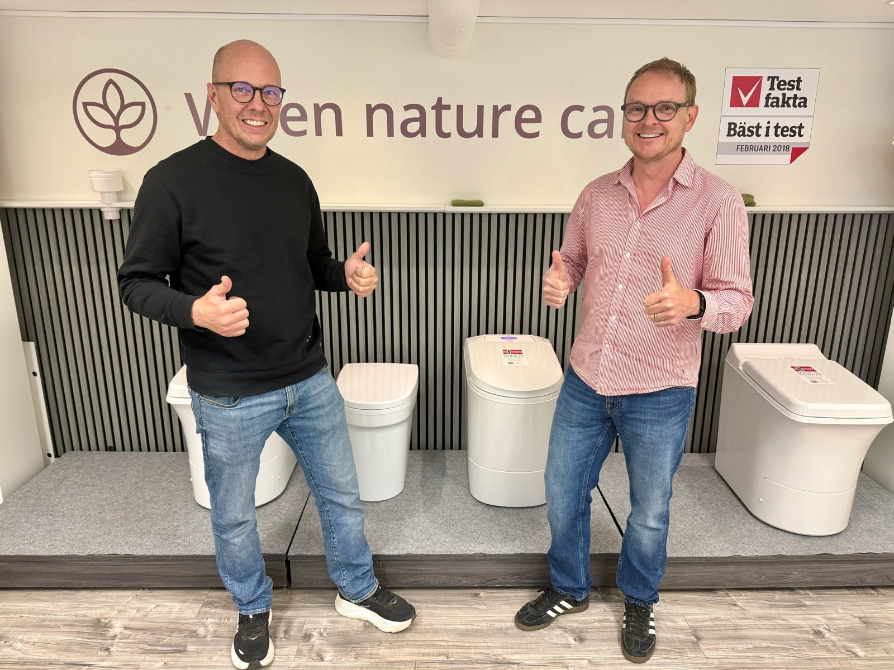

En Cinderella förbränningstoalett är en av de smidigaste lösningarna för stugor, fritidshus, husbilar och båtar utan vatten och avlopp. Men den vill bli skött. Med regelbunden asktömning och en katalysatorsköljning om året håller den i många år utan strul.

Har du redan en Cinderella, eller funderar du på att skaffa en? Vi går igenom val av modell, vad som är viktigt vid installationen och de rutiner som avgör om toaletten blir en bekymmersfri del av stugan eller en återkommande huvudvärk.
Vad är en förbränningstoalett?
En förbränningstoalett bränner upp det som hamnar i den. Kvar blir bara aska, ungefär en kopp per person och månad. För att den ska fungera behövs el (eller gasol) och en skorsten ut. Inget vatten, inget avlopp. Det gör den till en av få lösningar för stugor, fritidshus, husbilar och båtar som inte är anslutna till kommunalt VA.
Jämfört med utedass blir skillnaden påtaglig. Ingen latrinhantering, ingen lukt, inga fulla tunnor att släpa iväg och tömma. Med några enkla rutiner är det ungefär lika smidigt som hemma.
Installationen avgör nästan allt
Det viktigaste man bör veta innan man köper en Cinderella är att installationen avgör nästan allt. Runt 90 procent av alla problem som dyker upp ute hos kunder går att spåra till installationen, och oftast handlar det om ventilation eller skorstensdragning.
De vanligaste fallgroparna:
- För lite tilluft till rummet där toaletten står
- För långa horisontella sträckor eller fel typ av böjar i skorstenen
- Skorsten som inte avslutas tillräckligt högt över taket
- Andra fläktar i samma rum som stör luftbalansen
Garantin täcker inte fel som beror på felinstallation, så det är värt att lägga lite extra krut här. Är du händig och följer manualen ordentligt går det utmärkt att installera själv. Vill du ha en kontroll av ventilation och skorsten innan du drar igång hjälper vi gärna till med det.
De rutiner som faktiskt håller den vid liv
En Cinderella är inte underhållsfri, men den är inte heller krånglig. De flesta dyra reparationer går att undvika om man gör rätt saker med jämna mellanrum.
Töm askan en gång i veckan
Töm askan en gång i veckan, oavsett om du använt toaletten mycket eller lite. Vänta inte på att tömningslarmet ska komma. Och dra aldrig ur strömsladden under tömningen, då nollställs inte räknaren och toaletten tror fortfarande att asklådan är full.
Skölj katalysatorn en gång om året
Det här är den enskilt viktigaste underhållsåtgärden. En gång per år, eller efter ungefär 500 påsar, ska katalysatorn sköljas med minst 15 liter hett vatten. Vattnet löser upp urinkristaller som annars sätter igen katalysatorn och börjar lukta. Första gången låter det omständligt, men när du gjort det en gång tar det bara några minuter.
Litet tips som gör stor skillnad
Lägg alltid lite toapapper i botten av påsen innan användning. Det dämpar stänk som annars fräter på temperatursensorn över tid. Och kör en förbränningscykel per påse. Att samla flera kiss innan man trycker på knappen är vänligt menat mot elräkningen, men det sliter rejält på toaletten.
Modellerna i korthet
Cinderella har flera modeller och valet beror lite på dina förutsättningar. Har du el i stugan står du mellan Comfort, Classic och Premium. Saknas elnät finns gasolmodellen Freedom.
Comfort (el)
- Slutet system, tar luft utifrån
- Mindre känslig vid installation
- Driftsäker och beprövad
- Lägre reservdelskostnader
Classic (el)
- Öppet system, tar luft från rummet
- Kräver dedikerad ventilation
- Enklare installation i vissa lägen
Premium (el)
- Soft close på locket
- Tydlig display för val och service
- Teflonbelagd skål så engångspåsen inte fastnar
- Snyggare och mer premiumkänsla
Freedom (gasol)
- Oberoende av elnät
- Passar off-grid, husbil och båt
- Drivs på propan med 30 mbar regulator
- Service varje eller vartannat år
För en vanlig stuga med el rekommenderar vi oftast Comfort. Den är robust, lätt att felsöka och har lägst ägandekostnad i längden om man räknar in både reservdelar och service, inte bara inköpspriset.
Tillbehör värda att titta på
Några av tillbehören är lätta att förbise men gör stor skillnad i vardagen.
- Cinderella Urinal. Avlastar förbränningstoaletten kraftigt, minskar antalet cykler och drar ner el- eller gasolförbrukningen. Klokt val för familjer.
- Extra askinsats. Med en extra insats kan du byta till en ren medan den andra svalnar eller diskas. Billigt och gör vardagen smidigare.
- Värmesits i frigolit. Litet tillbehör som höjer komforten rejält under kalla månader. Tacksamt en frostig morgon.
- Biobox för gråvatten. För dig som också vill ta hand om bad-, disk- och tvättvattnet. Kräver kommunalt tillstånd men är ett bra komplement om man vill ha en helhetslösning.
Service: när och hur ofta?
Med rätt skötsel hemma räcker det långt. Men vissa saker behöver göras av en servicetekniker. Vår grova rekommendation:
- El-modeller. Katalysatorsköljningen kan du sköta själv en gång om året. Vill du hellre slippa, eller passa på att få toaletten översedd samtidigt, fixar vi det åt dig. Då passar vi också på att kolla tempsensor, microbrytare, ventilation och skorsten.
- Freedom (gasol). Service varje eller vartannat år, ungefär som en bilservice. Tändstift, tändkabel och brännare byts som en enhet för att slippa backjobb.
- Akut service. Boka när du ser felkoder, känner ovanlig lukt, hör oljud eller om något inte fungerar som det ska.
Varför certifierad service?
En förbränningstoalett är på pappret en relativt enkel maskin, men det är ändå en värmegenererande apparat med el eller gasol, ventilation och elektronik. Att låta en certifierad servicetekniker göra jobbet ger några konkreta fördelar:
- Garanti och reservdelsgaranti gäller
- Originaldelar med ettårsgaranti på det vi monterar
- Tillgång till support och teknisk dokumentation från tillverkaren
- Mätinstrument och rutiner för att hitta även lurigare fel
- Erfarenhet av vad som brukar gå sönder och vad som behöver bytas
Sammanfattning
En Cinderella är en smidig lösning för stugor och platser utan VA, men den vill bli skött. Det viktigaste är att installationen blir rätt från start, att askan töms en gång i veckan, och att katalysatorn sköljs med 15 liter hett vatten en gång om året.
Gör du det håller toaletten i många år. När det väl är dags för service, felsökning eller reservdelsbyte finns vi i Nynäshamn som återförsäljare och certifierade servicetekniker, med originaldelar och rutiner direkt från tillverkaren.
Funderar du på en Cinderella, eller behöver service?
Vi är återförsäljare och certifierad servicetekniker i Nynäshamns skärgård. Hör av dig så hjälper vi dig.
Kontakta ossVanliga frågor
- Hur ofta ska jag tömma askan på min Cinderella?
- Töm askan en gång i veckan, även om du använt toaletten lite. Vänta inte på tömningslarmet. Och dra aldrig ur strömsladden under tömningen, för då nollställs inte räknaren.
- Måste katalysatorn sköljas och hur ofta?
- Ja, en gång om året (eller efter cirka 500 påsar). Skölj med minst 15 liter hett vatten. Det löser upp urinkristaller och är den enskilt viktigaste åtgärden för att slippa lukt och driftstörningar.
- Vad är skillnaden mellan Comfort, Classic och Premium?
- Comfort är ett slutet system som tar förbränningsluften utifrån och är mindre installationskänslig. Classic är ett öppet system som tar luft från rummet och kräver dedikerad ventilation. Premium är Comforts snyggare storasyster med soft close på locket, tydlig display för val och service, och teflonbelagd skål så engångspåsen inte fastnar.
- Behöver en förbränningstoalett vatten eller avlopp?
- Nej. Cinderella behöver bara el (eller gasol om du har Freedom) och en skorsten ut. Slutprodukten är steril aska, ungefär en kopp per person och månad.
- Hur ofta behöver en Cinderella service?
- El-modeller klarar sig långt på regelbunden hemmaskötsel, men en årlig översyn med katalysatorsköljning är en bra rutin. Freedom (gasol) bör servas varje eller vartannat år, ungefär som en bil.
- Luktar det från en Cinderella förbränningstoalett?
- Vid rätt installation och underhåll är lukten minimal. Dålig lukt är nästan alltid ett tecken på att katalysatorn behöver sköljas, att asklådan inte töms i tid eller att det är något fel på ventilationen.
- Varför är installationen så viktig?
- Cirka 90 procent av alla driftstörningar beror på felaktig installation, oftast ventilation. Garantin täcker inte fel som uppstår av felinstallation, så det lönar sig att följa manualen ordentligt eller låta en certifierad servicepartner installera.
- Vilken modell passar bäst för stugan?
- För de flesta stugor med el rekommenderar vi Comfort. Den är driftsäker, har lägre reservdelskostnad och är tåligare för enklare installationer. För platser utan elnät finns gasolmodellen Freedom. Vi hjälper gärna till med valet utifrån just ditt läge.